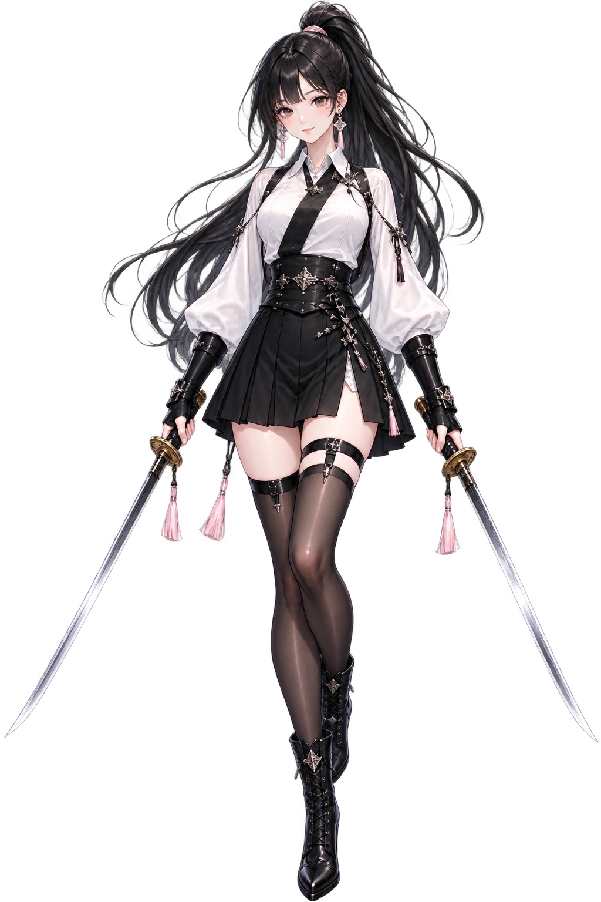
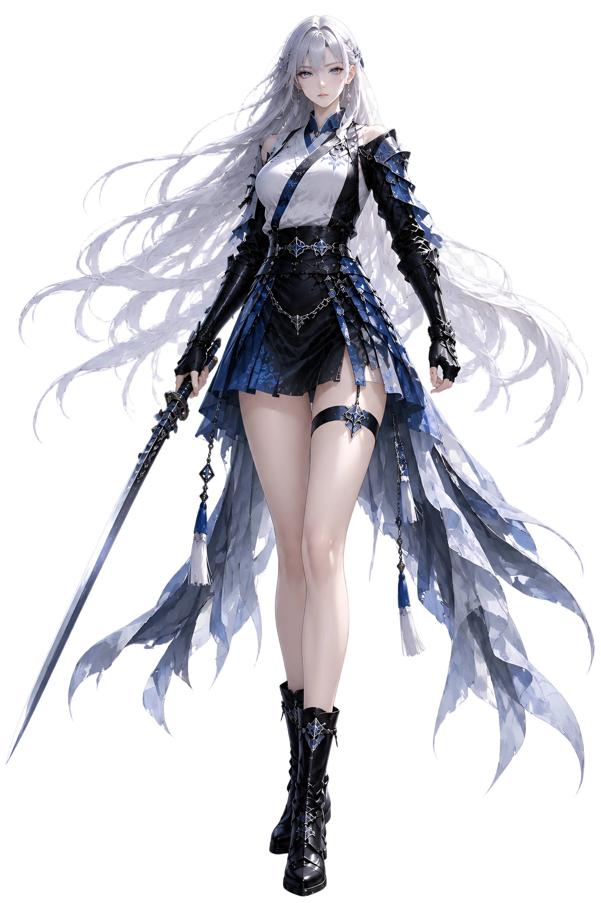
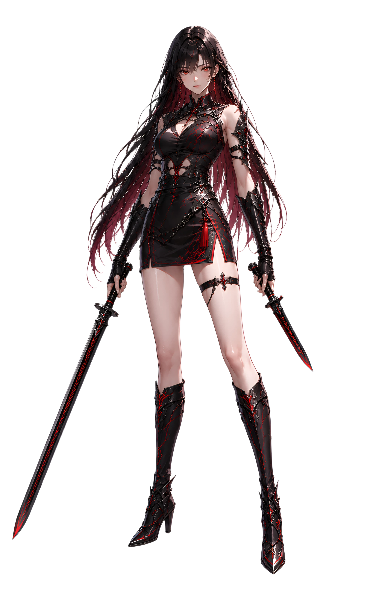
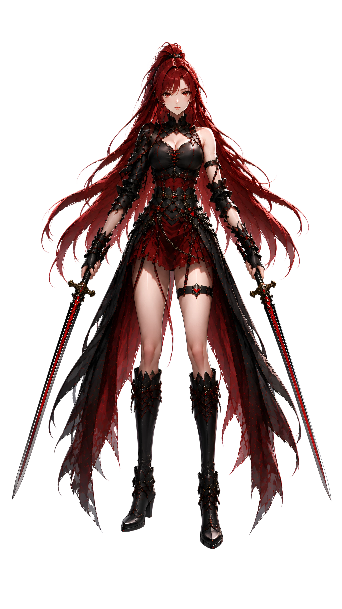

CHARACTER ASSET REPLACEMENT · v0.9.6.1
기존 캐릭터 이미지를 제거하고 사용자가 제공한 신규 원본으로 전면 교체했습니다.

천류관 소속의 중립 계열 여검사. 업로드된 신규 원본만 사용합니다.
흐름을 거스른 자는 결국 흐름의 끝에 서게 된다는 신념을 지닌 검사.

백은빛 장발과 청색 계열 무복이 특징인 검사.

검붉은 기운과 강한 카리스마를 지닌 마교의 핵심 무인.

붉은 머리와 쌍검을 사용하는 사파의 핵심 무인.